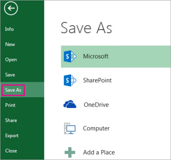
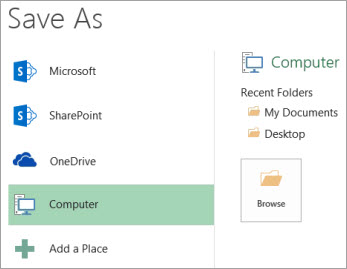
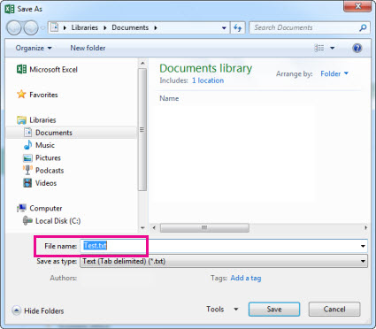
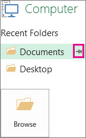
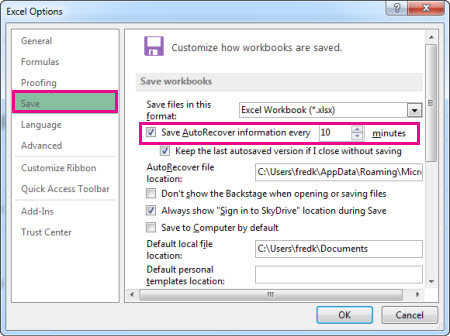

Wherever you want to save your workbook (on your computer or the web, for example), you do all your saving on the File tab.
While you’ll use Save or press Ctrl+S to save an existing workbook in its current location, you need to use Save As to save your workbook for the first time, in a different location, or to create a copy of your workbook in the same or another location.
Click File > Save As.

Under Save As, pick the place where you want to save your workbook. For example, to save to your desktop or in a folder on your computer, click Computer.

Tip: To save to your OneDrive location, click OneDrive, and then sign up (or sign in). To add your own places in the cloud, like an Microsoft 365SharePoint or a OneDrive location, click Add a place.
Click Browse to find the location you want in your Documents folder.
To pick another location on your computer, click Desktop, and then pick the exact place where you want to save your workbook.
In the File name box, enter a name for a new workbook. Enter a different name if you’re creating a copy of an existing workbook.

To save your workbook in a different file format (like .xls or .txt), in the Save as type list (under the File name box), pick the format you want.
Click Save.
When you’re done saving your workbook, you can “pin” the location you saved to. This keeps the location available so you can use it again to save another workbook. If you tend to save things to the same folder or location a lot, this can be a great time saver! You can pin as many locations as you want.
Click File > Save As.
Under Save As, pick the place where you last saved your workbook. For example, if you last saved your workbook to the Documents folder on your computer, and you want to pin that location, click Computer.
Under Recent folders on the right, point to the location you want to pin. A push pin image appears to the right.

Click the image to pin that folder. The image now shows as pinned . Every time you save a workbook, this location will appear at the top of the list under Recent folders.
Tip: To unpin a location, just click the pinned push pin image again.
Excel automatically saves your workbook while you’re working on it, in case something happens, like the power going out. This is called AutoRecovery. This isn’t the same as you saving your workbook, so don’t be tempted to rely on AutoRecovery. Save your workbook, often. But Autorecovery is a good way to have a backup, just in case something happens.
Make sure AutoRecovery is turned on:
Click File > Options.
In the Excel Options dialog box, click Save.

Under Save workbooks, make sure Save AutoRecover information every n minutes is checked.
Set the minutes for how often you want Excel to back up your work, and then click OK.